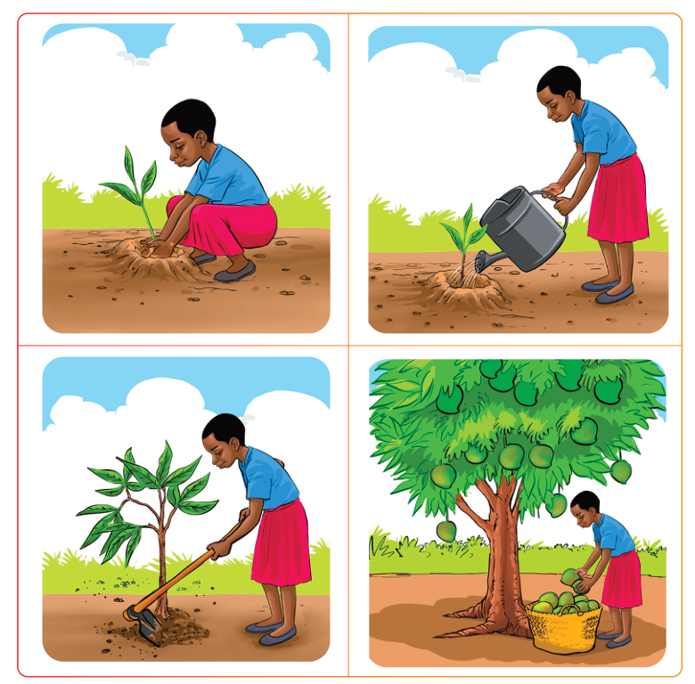

English for Secondary Schools Student’s Book Form One, printed page 21
Questions
1.
When is Kamu’s birthday?
2.
Who promised to take Kamu to the Ngorongoro National Park?
3.
Why did Kamu invite Lamyana, Mpepa and Simba to her birthday party?
4.
Why didn’t Bora sleep well the night before his journey to school?
5.
Why do the students have to report to the school administration block?
6.
Why was Bora excited?
(c)
Create a short story using the following pictures and narrate it to the class.

Four-picture sequence of a girl planting a seedling, watering it, hoeing around the growing tree, and later harvesting ripe mangoes into a basket from the mature tree.A sequence of four pictures showing planting, watering, tending, and harvesting.